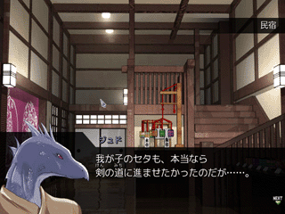
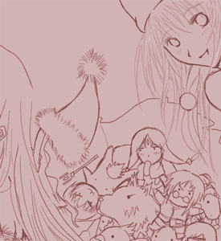

シルバーセカンド開発日誌
■
2009-06-04 (木) 今回はプログラム開発▼関西ではつい先週くらいまで、屋外もニュース映像も
マスクフェチの人が朝から晩までハァハァできる状況になってました、
あんまりシャレになってません、ウルフです。
現在、WOLF RPGエディターVer1.12をテスト中です。
<今日のスクリーンショット>

メアリー、シルフェイド幻想譚より参戦。
武術運動部で出会うことができます。
男の人が嫌いなので、主人公が男だと、攻略がちょっと難しくなります。
【最近進めた作業】 主にプログラムの作業中心
・前の修正からだいぶ経つので、
WOLF RPGエディターのバグ修正と新機能の追加を行いました。
新機能は個人的難題でしたが、解決してスッキリ。
・シルフェイド学院物語のイベントエディタを強化しました。
・シルフェイド学院の戦闘システムをちょっと強化しました。
（シルフェイド幻想譚にあった「増援システム」を実装）
【今週の開発で考えた事・迷ったことコーナー】
◆【大きな目標設定の効果】 海外進出を目標にすえたおかげで、
「新しいことに挑戦していかないと海外進出もきっと実現できないよな」
という意識が芽吹いたのか、ウディタで
かなり難易度が高そうだった2つの機能、
「マップを見ながら場所移動先を選択」と
「ツリー型マップデータの整理」を
実現するモチベーションを生み出すことができました。
前者の機能は、描画機能を駆使したプログラムを
作るのは作業が多いという壁で、
後者は自分の知らない知識を要するという壁で
実装を尻込みしていたものです。
今は手も足も出なさそうな目標を立てる効果って凄いなあ、と思います。
もちろん、初っぱなから諦めちゃう目標には意味がありませんので、
諦めきれないけど死ぬ気で頑張れる目標を立てるのが大事！
なお、プログラムは、完成品が分かってて多少処理が重くてもいいなら、
天才的発想がなくても作れますから、作成中困ったことは
それほどありませんでした。
マイクロソフトのサンプルプログラムも参考にして。
やはり実際に動くサンプルがあると、参考になりますね。
吸収速度が早くなる！
ウディタにも、コピペ切り張りOKのミニテクニックデモ集ゲームが
出てくれば、きっと嬉しいんでしょうけれどね。
みんなで勝手にコモン足していけば作れるので、悪くないと思うんですよ、
自作ウィンドウのカーソル処理の基礎部分だけ作って、
コピペすればすぐ改良できるような。って相変わらず他人任せですけれど！
私の作業時間は、プログラム修正や説明書修正に時間使わせてください！
さすがに何でもかんでも一人じゃできなくなってきています。
【目の前で自分のゲームを遊んでもらう効果について】
2週間前の話ですが、東京や栃木だとかに旅行に行ってきました。
旅行先で、普段手伝ってくださっている方々やテストプレイヤーの方に
集まっていただいたので、シル学の作りかけを遊んでもらいました。
目の前で楽しく遊んでもらってるのを見ると、「ああ、この風景が
ゲーム開発にはまったきっかけだったなあ」という初心を思い出せます。
集まってゲームを遊ぶってのは基本的になくて、
凄くまれなことなんですけどね。
もし万が一、目の前で自分のゲームを遊んで貰う機会があったら
ぜひやってもらうべきだと思います。絶対恥ずかしいので、直前には、
いつもより必死で作品をまともにしようという努力ができますよ！
どんな形であれ、自作品をより高めようという意識が
生まれる機会があるなら、最大限に活かすべきだと思うのです。
でも凄い羞恥プレイなので要覚悟。
何はともあれ、実際に遊んでもらって
直すべき部分が色々明らかになったので、
その辺りの修正も含めて開発を進めていきたいと思います。
開発にも慣れてきたおかげか、それほど致命的な欠陥はない感じでしたが、
やっぱり詰めるところはしっかり詰めておきたいですしね。
細かいバグが一杯あるのはこの段階ではご愛敬！！！
以下は拍手コメント返信です。 ▼追記を開く▼＞去年出たモノリス未暗号化のイノさんをちょこっと改造したんですが、
＞動画投稿って大丈夫でしょうか。音楽は著作権的理由で消す予定です
二次創作は原作グラフィックの使用を禁じているので、
公式な許可は出せません。
勝手にアップする分には、そのくらいなら何も言いませんけど、
ってくらいで。
ただ、効果音も全て有料素材ですので、サウンド全般を
差し替えていただいた方が安全だと思います。
＞以前公開していらっしゃったモノリスフィア製作元データの
＞再公開の予定はないですか？
残念ながらありません。
＞（シルフェイド学院物語に対して）よし今から金貯めるぜ。
＞大体いくらなのん？
＞あとデータ以外にもCDか何かに焼いて販売して
＞欲しいと思わなくも無いですわ
開発期間の長さから考えて、2,000円くらいになりそうです。
CD販売は、作るのに結構なお金がいる上、在庫が残るのが恐い！
同人方面にも進出します！
ってことになったら作らざるを得ないでしょうけれど、
同人の世界では、オリジナルのゲームはマジで
全然売れないという話も聞いたので、う～ん、という感じです。
あ、DVDケースの紙や、CDに貼り付ける
シール用の画像ファイルを作りましょうか！
どうしてもCD欲しい方は、セルフサービスでCD化ってのでいかがでしょう。
材料費はプリンタあること前提で、
CDケースとCD用シールで300円くらい？
＞＞これくらいプレッシャーがないと普段の生活に
＞＞張りがない体になっちゃった自分……。
＞ドMですね(*´ー｀)
はい！そう言われると嬉しいです！
でもみんなだって、ちょっとしんどくても、
毎日会社や学校に行ったりしてるはずですよ。
極まれば自発的に過労死しちゃうほど働いてしまう恐るべき勤勉さは、
日本人の不思議な特質の一つです。
世界的に見れば、皆さんは自分が思っている以上に勤勉な方です。
正直朝から夕方まで学校行ってた時代は、
自分の体力じゃ毎日ボロボロでした。
シルノ作ってたときも、開発と学校の両立が大変で血便が出るほどでした。
それでも、気が張ってる状態なら全然平気！
血便出るまで何ら体に異常がないと思ってました。
もっと大変な方々からすれば、
「血便ごときで何を」とおっしゃるでしょうけれど、
一線越えたら割と簡単に死ぬまで
やり続けられるんじゃないかなと思いました。■
2009-05-24 (日) これから目指すところ▼
もっぱら、これからの方針に関わる内容です。
【日誌の内容について】
自分が、何を開発するときどの辺を苦労したか、どんな考えで作っていたか、
全部、後から見て全て分かるように書こうと思いました。
開発日誌のネタがないのは、普段自分がどんなことを考えて作っているのか
あんまり意識していないからではないかと考えたからです。
また、そう思うことで、開発している最中も、常に自己批評しながら
作りかけのモノ、および自分自身を見ることができるだろうと考えました。
己の開発姿勢に対する視点を持つことで、開発において無駄な部分や、
さらに効率的にできる部分をみいだせるかもしれません。
【モチベーション不足】
アマチュアゲーム開発の問題点として、
「完成しない（最後までモチベーションがもたない）」
が前回挙がっていました。
が、実はそのモチベーション不足は、私自身にも当てはまっていました。
自分は違うと思って
「コンテストはモチベーションになるよね！」みたいなことを
書いていましたが、実は私自身も、次の目標を失って
何を目指せばいいか分かっていない状態になっていたのです。
だいぶ昔、シルフェイド見聞録を作っていたころは、
「いつかフリーゲームの世界で一番になりたい」
と日記に書いた気がします。
それが今、どれだけ叶っているか分かりませんが、
正直、いま絶対叶わないほど
でっかい夢をぶっこいてもバチは当たりません。
ここ数年は、コンテストパークでプラチナ賞を取るのが目標でした。
ホントはＡコンでグランプリを取ることを目指したかったのですが、
どちらも達成する前に終わってしまって、少し残念です。
次にぶっこく目標は、
「海外のゲームコンテストで賞を取る/英語版を出す」です。
コンテスト投稿はまだとしても、少なくとも、
2011年が終わるまでには英語サイトの開設、および、
今後の作品での英語版開発を行えるようにすることを目標とします。
基本的に、ゲームとして面白くすべき部分を
構成するところはこれまでと同じで、
挑戦すべき要素は「言語の壁」がメインですから、
英作文が全然できない私に
無理矢理トレーニングさせるためにはいい手段だと思ってます。
何より英語が読めないと、海外の豊富で有用なドキュメントが
ほとんど読めなくて、ちょっと困るんです。
インターネット広しと言えど、日本だけでは案外情報量が少ないので、
今後の長い人生、インターネットを2倍以上有効に使うためにも、
英語の読み書きは、自分で需要を生んで覚えたいと思ったのです。
特にプログラムのパーツなら、海外探せば必ず落ちてます。
知識量がほぼそのままプログラム能力に直結する世の中、
さらに上を目指すなら、やはり英語程度はできないと困りそうです。
これまでも、ゲームで顔グラフィックを自作したいから絵を練習し、
自作システム作成技術を編み出し
（当時は参考になる講座･解説もなかった！）、
そしてプログラミングによるゲーム開発能力を習得してきました。
ですが、プログラミングをある程度習得して先が見えてきた段階で、今後
何を身につけるべきかの道しるべを失い、気力が落ちていた気がします。
常に、自分にできなかったことを身につけていくこと、
常に、これまで達成できなかったことに挑戦していくこと。
それらを意識すると、知らず知らずの内に、とんでもないエネルギーを
生み出す原動力になるのではないかと、私は思っています。
まずは地道に、昨日の自分より前に進むことから。
今話しているのは、そのための道しるべを立てます！というお話。
やはり、方向性が見えているに越したことはないと思います。
ということで、開発日誌の一番上にも目標を書いておきました。
ここまでドドーンと宣言しておけば、自分を追い込むこともできるでしょう。
実現するためにも、まずは
シルフェイド学院物語完成を目指して邁進しますよ！
絵でも、ゲームでも、創作が好きな全ての皆さんに
何か目指す道しるべができますように。
ところで、海外のゲームコンテストって
どんなキーワードで探せばいいのん！？
第一歩からコケてます、自分。amateur game contest だと、
いまいち引っかかってない感じがするんですよ！？
そのワードでサッと見た限りでは、havok（3D物理エンジン）を使った
ゲームコンテストが行われるらしいということが分かりましたが、
それ以外はサッパリ。そもそも、それさえいつ開催かよく分からないという。
アマチュアゲームコンテストって海外でもあんまりやってないのかなあ。
ついでに3Dゲームのノウハウがゼロな上に、3Dならではネタもない！
いつかは「3Dゲームの壁」も突破せざるを得ない気がしますが
正直なところ企業製ゲームには泣いて詫びても勝てない分野なので
こちらよりは英語版開発を優先するほうが有用かなあ、と思います。
たくさんの英語文書を、いちいち翻訳しなくても読めるようになりたい！
でもFALLOUT3は英語のままプレイしました。行き先マーカー機能最高。
こういう有名作は割と簡単な英語で書かれているんだそうですが、
それでも、後半のストーリーが微妙に分からなくなりました。
前半～中盤の、ストーリー的な文脈を予測できるところまではいいのですが
後半の「真実が明らかになる辺り」では文脈を予想しながら
読むことができなくなり、分からなくなるわけです、トホホ。
以下は拍手の返信です。主に2つ前の内容。 ▼追記を開く▼
＞いいですね和大好きです、ところでシルフェイド学院物語は
＞シェアウェアなのですか？それともフリーですか？
シェアウェアです。クオリティは折り紙付き！
月々500円～400円ずつくらいお小遣いを溜めておいてくださると
ちょうど間に合う程度だと思います。
＞氷野さんのウディファール（だっけ？）がとってもかわゆいです。ｷｭﾝｷｭﾝ
惜しい！ウルファール（WOLF R）です。いいですよね。
WOLF RPGエディター公式サイトのトップ絵はいつでも大募集中ですよ！
投稿はお絵かき掲示板まで。
＞非常に今更なのですが、戦闘で「地の利」を生かす事って
＞出来るのでしょうか？形勢が悪くなったら一旦引いて壁に
＞隠れて回復とか出来ると嬉しいかもです
シル学では、「体勢」
（ターンを消費せずにキャラのモード変更できる機能）で
そういったものに近い表現をすることになりそうです。
攻撃力が1/3･スタミナ消費倍増するが、敵ダメージを半減できる『防御』の
体勢にしてから回復するとか、そういった戦術を採ることができます。
＞ウディコンに「ゲーム以外のウディタ作品」はOKなんでしょうか
＞具体的にはゲームの音楽画像などの
＞素材の整理や素材捜索の補助など（ｒｙ
ゲームのみです！
その辺りはWikiで整理してくださると、
皆さん喜ぶと思います。
＞国内におけるゲーム開発が壊滅しつつある原因として、
＞一部のやかましい団体主導による表現規制が萎縮効果を
＞生み出しているというのも考えられそうです（中略）
＞ウディコンの残酷表現厳禁は緩くしてもらえませんか。
＞血が出たらNGでは少し厳しすぎます。
血くらいなら問題ない気がします！R18の残酷表現はアウトというだけで。
また、グロい描写でも、キャラチップだけでの演出なら、
かなりキツいものでも許容される面があると思います。
ただしそういう描写があるのは参加時に言っておいてくださいね！■
2009-05-10 (日) シル学 全裸で屋外（アルバート）▼武術運動部の合宿イベントにて、
夜空をアルバートと一緒に眺めるイベントを作ったら、
夜空の下、アルバートが全裸で出てきてコーヒー吹いたウルフです。
というのも、直前の風呂シーンで
服装を裸にしたまま戻してなかったのです！
でもアルバートが裸になるのは、直前に男風呂シーンが出た時だけ、
つまり主人公が男の場合だけアルバートが全裸で出てくるんですよコレ！
もう色んな意味で白熱しすぎなバグでした。
この空気、レジェレスを思い出します。
今思い出すと、レジェレスは恥ずかしいとかそういうレベルを超越した
処女作のような気がしてなりません。
それはそうと、今回のスクリーンショットは武術運動部の合宿のシーン。

兜かぶってないので分かりにくいかもしれませんが、セタパパです。
(追記：背景は「お楽しみCDコレクション CG背景素材集 和の風景」のもの）
前回スクリプト実例を晒したときには「ジュドって誰ー？」
という質問が来なかったので言っておりませんでしたが、
ジュドさんとは、つまるところセタパパですね。
武術運動部に入ると、エージス先生かジュド先生の
どちらかに就いて指導を受けることになります。
武術運動部は、イベント少なめでサクっと作る予定が、
案外苦戦しています。たくさんのキャラのイベントを、
イベントや好感度の整合性を保ちつつ構成するのが大変！
そして、スクリプトを組むのも思ったより面倒です。
入力文字数が半端ないので、マジで手がずっと腱鞘炎気味！
もう、簡単に組める『補助ツール』を作った方がいいかなあ、
どうしようかなあ、と迷ってます。
それで最終的に開発が早くなるのか遅くなるのかは分かりませんけれど、
まだまだ先は長いですし、作者自身もコマンド忘れがちですし！
何より一般公開したときに「自由にイベントを作れるようにする」を
ウリにするなら、自然と必要になりますから、少し寄り道して、
今の内に作っておくのもいいかもしれないとコレ書いてて思いました。
うん、そうだ、ちょっと寄り道しよう！
まだ開発スピードを上げるための補助ツール作りに
時間を使ってもいい段階……だと思いたい！
やれる選択肢は、いつでもバカみたいにたくさんあるんです。
どれから手を付けるのが一番効率的かを考える、
それもゲーム製作の一つの面白みだと思います。
特に、技術の向上によってツール作成や修正が選択肢の一つに入ると、
ますます選べる行動のバリエーションが膨大になっていきます。
ですが、その修正（というかツール自作）のおかげで、
ツクールで作っていた頃よりは、
より速く、簡単に高クオリティを実現できるようにもなっています。
最初はツクールと同じくらいの構築速度でしたが、
今ではウディタの方が、システムを速く作れるようになりました。
ってまあ自分で好きなようにいじってるんだから、そりゃそうですよね。
もちろん、ツクールに劣る部分が大量にあることは否めません。
それに、常にフル自作を想定している人間が作ったツールが、
一般の人に使いやすいかどうかとなると、やっぱり話は別です。
ウディタはどこまでもマニア向けでしょうし、
開発者本人がRPGを作らないので、
RPGに適したインターフェース整備も遅れています。
マップ一覧のツリービュー化、場所移動時の移動先マップ表示などは、
いつか必ず入れようと思いつつ、本人がその必要に迫られていないので
モチベーションが上がりにくくて、後回し気味になっている部分です。
やっぱり完全なボランティアは、私にはできません。
エゴのおすそ分けが精一杯。
もちろん、ウディタへの不満は不満で、
ウディタ公式の要望スレッドでいつでも受け付けております！
半年後や一年後にふと要望の機能が実装されたりすることもあるので、
思いついたらご遠慮なさらずにバンバンどうぞ。 ■
2009-05-02 (土) 元気出ずともモノリスフィア▼夜～明け方の工事は終わったけど
前回の日誌からずっと調子が悪いウルフです。
主な症状は、
・集中できなくなった。頭がずっとモヤモヤしてる。
・問題に対する好奇心がなくなった。例えばウディタのバグ修正のときに
感じられる謎解きに似たあのワクワク感が感じられない。うーん。
・良い意味の危機感や緊張感がなくなった気がする。
・なんだか何やってても現実感がない。記憶力が落ちてる気がする。
・体は割と健康。でも夜、疲れてても明け方まで熟睡できない。
いわゆる5月病でしょうか。
気候の変わる時期だから余計にそうかもしれません。
創作活動は、休むと取り戻すまで時間がかかるので、
エンジンかけるために色々やってみてはいるのですが、
どうもイマイチです。
今は「作る→結果に現れる」のテンポが速くて
作業への集中力が比較的維持しやすい、
動画編集やWOLF RPGエディターのバグ修正やら
シルフェイド学院物語の細かいシステム作成作業をしてたりします。
ストーリー書いたりするような脳のパワーが必要な作業はキツいです！
こういうボンヤリした状態は、パワーが必要な実作業には入らずに、
案だけを出し続ける「ネタ出し作業」やルーチンワークをするのには
いいのかもしれませんね。
コンディションに合わない作業を続けてても効率が悪いだけですから、
うまいこと今の状態を活かしたいものです。
体調的にも精神的にも、リズムというか、波がありますから、
完全にベストな状態を維持し続けるのは困難だと思っています。
逆にあらゆるコンディションを活かしてこそ、
真の熟練者なのではないかと思うのです。
ということで以下は今回の低気力の中で作った動画です。
最近は「動画」も創作物の一つとして一般的になりつつ気がするので、
こういった機会に練習していきたいなと思います。
『モノリス様ブチ切れ物語』 （※隠しボスのネタバレです）
せっかくなのでとニコニコ動画の方にも投稿してみましたが、
画質そのものはYoutubeのHDモードの方がいいかもしれません。
コメント付きで楽しみたい方向け↓
【ニコニコ動画版】モノリス様ブチ切れ物語
使用させていただいたイラストは、
お絵かき掲示板で皆さまからお寄せいただいたものです。
カッコイイ一枚、面白い一枚、感情溢れる一枚、
本当にありがとうございました。
なお、製作者が作ったプレイ動画ってのは、いくらでもズルしまくれるので、
基本的に信用しないでください。本当に一番信用できるのは、
一般ユーザの方が作ってアップしてくださったプレイ動画なんです。
今回は、新版モノリスフィア公開後、一年経っても一般ユーザの方による
イノセンス戦ノーダメージ動画が出なかったようなので
私自身が作りましたけれど、こんなもん正直ノーカウントです。
その気になれば、（一見）超凄いスーパープレイ動画も作れると思います。
しかしその実状は、中身が自動化されたモノリスさんかもしれませんし、
遅い環境でプレイしたものを早回ししたものかもしれないのです。
つまりこの映像はジョーク動画としてとらえていただくのが、
メディアリテラシー的に言って一番正しいってことで。
皆さんも騙されないように。
もちろん、これはコンシューマゲームの公式映像にも言えることです。
【イノセンス攻略覚え書き】
イノセンス戦は、全能力が封印された環境下で戦わなければなりません。
使えるのはプ（略）スにもらった重力弾の能力のみ。
モノリスの重力弾は、チャージ時間はきっかり1.0秒(60フレーム)。
最低限ヒットさせなければいけない重力弾の数は、
第一形態 フェニックスに8発＋本体に6発
第二形態 本体に6発
第三形態 本体に6発
総計 26発
つまり全弾当てても、チャージに要する時間は
最低26秒かかることになります。
最速クリアを目指すなら、当てる/回避するための時間を減らすことが重要。
溜まる瞬間に次のエモノを狙い定めていれば40秒以内の攻略も可能かも？
今回の最速撃破タイムは49秒でしたが、それでも攻撃を外したり
狙いを定めるのに時間がかかった場合が結構あったりして、ミスは多めです。
以下はシルフェイド学院物語のプロトタイプ動画にいただいたコメントです。
貴重なご意見ご感想、誠にありがとうございました。 ▼追記を開く▼＞ついに動画公開！完成楽しみに待ってますね。・・・しかし、
＞この動画だけみるとアルバートが軽い中二病なだけでまともに
＞見えるのがなんともｗ 初めてアルバート見た人は確実に
＞勘違いしますってｗ
いつも通り、知らない人からするとアルバート君は普通の人なんです。
本性をご存じの方はいつボロが出るか、ワクワクしながらご覧下さい。
（※中二病 ： 中学2年生頃にありがちな、
やたらカッコつけた言動に憧れる病気）
＞今までの作品を知っているとニヤリとできるイベントなんかどうですか。
全編そんな感じがしないでもないですが、
ある程度は原作に沿った部分も入れていきたいつもりです。
最初の住居選択も、知らない人は知らない人なりに、
知ってる人は知ってる人なりに選べるよう配慮したものなんですよ。
＞シル学は基本マウス操作なんでしょうか？
＞長時間プレイするならゲームパッド対応であると嬉しいです
考えておきます！ただ、十字キーで選択できない場所が
いっぱい出てきそうな感じで、すでに操作の限界を超えているので、
（もともとシミュレーションのシステムで十字キーはキツいです）
あんまり期待なさらないでください。パッドの十字キーによって
カーソルが押した通りに動くだけなら、すぐ実装できると思いますけれど。
＞質問：最初のDJの下りは、ディビットさんと関わりが
＞あるのでしょうか？そんなｇｇｒｋｓとか言わずに
ありますよ。最初の下りは「指輪物語」のネタです！
で、ダンジョンズ＆ドラゴンズは指輪物語の
世界設定を参考に作られたゲームなんだそうです！
＞アルバートの鼻血顔グラはいずこにおわすか
忘れてたので追加しておきました。
＞動画ステキすぎです、ワクワクです。ところでアルバートは
＞Ｓな人向けになっちゃうんでしょうか、それだけが気がかりです！
いつからアルバートがＳな人向けになったのか私が聞きたいんですが、
非常にいたずらのし甲斐がありそうな人なので、
そういったイベントはどんどん入れていきたい所存です。お風呂とか。
＞引き継ぎの二週目はありますか？
あります！ といっても幻想譚みたいに一部の要素のみ引き継ぎになります。
＞今更なんだと思いますが、マウスのホイールをクルクルして
＞上のメニューのタブ(?)を素早く切りかえれるようにすると良いかと！
＞いちいち上までマウス持ってくのって案外疲れる気がしますｗ
おお！これはいい案ありがとうございます！
ただ、ホイールはスクロールバーの操作などでも利用するので、
実際は何もないところで回すと切り替えという感じになると思います。
テストしまくってると操作が面倒になってくる部分が出てくるので、
今も色々改善を進めておりますよ！たとえば動画中の
メールのイベント起動欄（「クラスの見学って？」の部分）なんかは、
下じゃなくて上にあった方が、マウスを動かす量が少なくていいですよね。
＞エージスさんにお世話になります。
残念、住居選択のアレはエージスさんじゃないんです。もっと厳しい人です。
なお、その人の娘が登場するかはまだ決めてない
（※顔グラフィックがまだ）ので、
ヘタすると「厳格な中年男性」さんと二人暮らしです。
超ハードな生活を送りたい人向け。
ちなみに、あの4つの住居選択は、上から順に、
「普通」・「Sの人用」・「女性に囲まれたい人用」・「ドMの人専用」
というコンセプトで開発を進めて行く予定です。今決めました。■
2009-02-21 (土) モノリスフィア 性能分析2▼前回に引き続き能力分析です。
だいたいの力関係略図。

中段右の人は今回評価してません。
能力評価で「/」にて区切られている場合は、
左が人形態、右が真形態の評価。E/Sなら人はE、真形態でS。
【女神アクエリア】 攻撃力E/B 防御力S スピードE/C 回復力E
無敵組二人目。海の世界の守護者。バリアを貼る能力を持っている。
本物のアクエリア・シールドはチャージ不要という異常性能、というか、
実は常時張っている。アクエリアが普段浮いているように見えるのは、
透明な水球バリアの中で浮いてるからで、空を飛べるわけではないのだ。
海の世界ならば龍になって戦える。
その状態では、雷神の槍（※身内！）でしか
ダメージを与えられないので、他の女神では倒す術がない。
ただ、人形態でも龍形態でも接触攻撃/直接攻撃しかできないので、
モノリスやフェニキスのようなスピードのある相手には追いつけなさそう。
【他の女神と戦ったら？】
シールドまたは龍の鱗により完全な無敵が保証されている。
他の女神からすれば、モノリスに続き、戦うだけ無駄な相手二人目。
龍になれば、プランティアならペロリと行けそうだが、
たとえかみ砕いても、そのそばからまた
腕やら足やら頭やら生えてきて終わらないホラーな展開に。
フェニキスにはたぶん人でも龍でも追いつけないのでドロー。
【女神ハーディア】 攻撃力A 防御力E/A スピードD/E 回復力B
無敵組三人目。冥府の世界の守護者、すでに死人であるため
年も取らないし死なない。主な攻撃方法は爆発攻撃の術と、
真の姿（※冥府の世界限定）になったときに手を振り回すこと。
なお、戦闘で使えるほど連続では使えないが、
人形態なら距離を問わず瞬間移動ができる。しかもゲートも作れる。
というか、今の五世界のゲートを全部作ったのがハーディアだったりする。
でも、そこんとこを自慢げに語ったりしないのがハーディア様の魅力。
「絶対に死なず」、「攻撃能力を持ち」、
「別の世界でもその攻撃力を行使できる」
の三要素が揃うのはハーディアのみ。なるほど最強はダテじゃない。
なお、先代モノリスに本気を出した（真の姿をさらした）のは、
爆発攻撃だけでは一発も当たらなくて、ラチが明かなかったから。
【他の女神と戦ったら？】
死なないので負けはない。戦うだけ無駄な相手3人目。
女神の中で倒せる可能性があるのはプランティアとフェニキスの二人だけ。
プランティア相手なら、その高速な治癒力に
勝てるかどうかが焦点となるが、
ハーディアでは攻撃頻度が足りなさすぎる。
一方、対フェニキスはというと、
太陽の化身に爆発攻撃が効くとは思えない。
真の姿になれば、フェニキスをバシバシ殴って倒せるかもしれない、
術さえ使わなければ弱点をさらさないので、フェニキスの炎で
ダメージを受けることもないからだ！
が、考えて欲しい、フェニキスは飛べる。
モノリス vs ハーディア戦時のように、閉所で戦わないと
にらみ合いで終わってドローになるだろう。
【女神フェニキス】 攻撃力A 防御力B（熱無効） スピードB 回復力E
太陽の世界の守護者。あらゆる熱攻撃を受け付けない。
主な攻撃能力は炎の弾を発射すること。
イノセントモードでの連射速度は半端ない。
太陽の世界内では不死鳥の姿をとることができ、
火の連射速度が上がったり移動速度が上がったりといいことずくめ。
攻・防・速において非常にバランスが取れた女神。
水に弱いのが難点だが、アクエリアの速度では人でも真形態でも
フェニキスに追いつけないので脅威ではない。
恐いのはモノリスがアクエリア・シールドを
張って高速で突っ込んでくることだけ。
または、ハーディア真形態にポコッと殴られたらダメージが入りそう。
【他の女神と戦ったら？】
プランティアになら一瞬で勝てる！！
でもコケリアン様に見られたら困るのでやらない。
それ以外は戦っても不毛。狭いところに押し込められたら、
真形態のハーディアやアクエリアに負ける可能性がある。
【総評】
フェニキスがブチ切れてプランティアを燃やしたりしない限り、
基本的に別の女神は倒せないと思って良さそうである。
万が一にでも誰かに勝てる可能性があるか、何人に勝てるかだけ考慮して
それとなく強さの順を決めるなら、おおよそ以下の通りになるだろうか。
ハーディア＞アクエリア＞フェニキス＞モノリス＞プランティア
面白いのが、女神のうち、5人中4人は
回復能力または完全防御能力を持っていること。つまり、
ダメージを受けないよう気を付けなければいけないのはフェニキスだけ！
おそらく、彼女は戦いが嫌いであろう、一方的に追い回すならまだしも、
モノリスのように何度も試行できるわけでもなく、
アクエリアのように無敵の盾を持っているわけでもないのだから。
プランティアも、よそでは全く攻撃力を持たないので、
ただ性格上の理由だけでなく能力的にも戦いを望まないはずである。
逆に、アクエリアママやモノリス、
ハーディアの3人がちょっと好戦的なのは、納得の行く話である。
戦いにほとんどリスクがないからだ。
もっとも、そのアクエリアママから生まれたアクエリア自身は、
永久シールドの能力に頼って非常にのんびり屋であるが。
アクエリアママは、シールドの常時展開能力に恵まれず、
雷撃のような攻撃能力の方が得意だったのかもしれない。
以上、総評として能力から見た性格診断を述べてみた。
女神の業界は、各々の能力が強力すぎて
手を出せない関係にあるというのが主な結論である。
また、万が一攻められても、自分の世界で「真の姿」を取れば
たいてい相手の女神を追い払うことが可能である、という意味では、
神様もうまいこと能力を振り分けたものだと納得。
ただしプランティアは弱い。
以下は気になったコメント。 ▼追記を開く▼＞クロノスドライブはウサギの命を源に発動してるんですね！
＞そして、使いすぎたら、ウサ子たちは死んでしまうんですか！？
はい、ウサ子たちが死ぬので使用は自重せよと
モノリスママからのお達しです。
クロノスドライブだけでなく、
ライフ増加やクロノスブースター強化も命を吸います。
＞強さの話題を見てふと気になったのですが、シルエットノートの
＞追加シナリオでの真なる魔王は随分と強くなってる感じがしますが、
＞創造主（シル幻の竜人の神）を越えたんでしょうか？
攻撃力的にはメチャクチャ超えてますが、生命力的にはまだまだです。
（真魔王強化版のHP9999、神のLIFEは30000オーバー）
＞重力弾はモノリス様の能力ではないのですか？
＞そうであれば攻撃力高いと思うのですが…
重力弾はプ（自主規制）ス専用の能力です。
女神は基本的に、攻撃的な能力を持つとその代償として
防御的な能力を得ることができない傾向にあります。
モノリスの「時間戻し」 が プ（自主規制）スの「重力弾山盛り」
に対応している感じですね。持てるのはどっちか一個。
＞プランティアって名前だけ見て一瞬誰だかわからなかったんだぜ
誤解を招くように、あえてあだ名を省かせていただきました。
結局最後までほとんど本名呼ばれてない気がしますね、草子さん。■
2009-02-18 (水) モノリスフィア 性能分析1▼
一人の人間のやれることなんてちっぽけだなあ。
さて、今回は、
＞シル作品強さランキングとかあったら見てみたい気がします。
というご意見があったので、ネタもないですし、ここでいっちょ
モノリスフィアのキャラ性能あたりについて分析しようと思いました。
今回はモノリスとプランティアのお二人について整理。評価項目は4点。
攻撃力 … 相手を倒す力。正確性・破壊力・範囲が大きいほど評価大
防御力 … ダメージを減らす力。特定属性を無効化することも評価＋。
スピード … 機動力、単純な移動速度。もちろん、速いほど評価大。
回復力 … 健康な状態に戻す能力。より早く・完全に治せると評価大。
【女神モノリス】 攻撃力D 防御力D スピードS 回復力S
無敵組一人目。
月の世界の守護者、攻撃手段は最高時速220kmの体当たりのみ。
しかしそれで倒せるのは自分の背丈くらいまでのヘビで
その他の相手には全く通用しない。
どんな攻撃も食らうという意味で防御も最弱。
彼女の能力は、モノリス・グラビティとクロノス・ブースター、および
クロノス・ドライブという、
時間操作＆重力操作系の能力に特化されており、
それで得られるスピードは紛うことなく5世界最速である。
また、なぜか名前を与えられていない術「時間戻し」により、
たとえモノリスを暗殺しようが丸ごと食おうが窒息させようが、
時間を戻して何もなかったことにされてしまうがゆえに、
誰も彼女を殺すことはできない。
が、モノリスそのものも、他の女神を倒す能力を持っていない。
「時間戻し」は世界を守る能力としても非常に優秀。助けを呼べるなら。
また、クロノス・ドライブはレベル10で
約19倍の主観速度にすることが可能！。
（複数のラスボス戦時の敵重力弾の生成時間、
通常1発1.5秒を基準にして推定）
モノリスの目から見ると1分に見える戦闘時間も、
端から見ればたったの3秒！
ドラ○ンボールもビックリである。
しかもその時のモノリスの最高時速は約4200km！
これで攻撃能力まであったら、5世界を一瞬で滅ぼしかねない勢いである。
ちなみにラスボスのクロノス･ドライブは10倍速。本家には及ばないが、
実際に5世界がヤバいところまで行ったのもうなずける。
ちなみに、原作では他の女神の力を借りて戦っていたが、
他者の能力はどんなに力をつぎ込んでも、
「本物」の1/3程度しか力を発揮できないということになっている。
「本物」は回数制限も無ければ、次発動までの充填やディレイもほぼ不要、
たとえばモノリスの扱う重力波を見れば、どれだけ使い放題かよく分かる。
他の女神が重力波で飛ぼうと思ったら、1秒に1回くらいが限界なのだ。
【他の女神と戦ったら？】
誰も倒せないが誰にも倒されない。モノリスは戦うだけ無駄な相手である。
だが、彼女が動けば周りはビビる。勝つまでやめないから。
【女神プランティア】 攻撃力C 防御力D スピードD 回復力A
緑の世界の守護者で、その身も植物でできているらしい。
本物のプランティア・ヒールの回復速度が
モノリスのMax時の3倍くらいと考えると、
毎秒ライフ5ポイント以上回復する上に、その回復回数も無限であるため、
生半可な攻撃では治癒力が勝り、簡単には倒れない。
治癒力の源である緑が全て焼き尽くされない限り、
彼女は立ち上がり続けるだろう。
ただし、炎一発で炎上即死しそうなのでフェニキスは恐い。
モノリスやアクエリアと仲がいいのは、緑の世界にいる限り、
この二人ではプランティアを傷つけられないから。
（※女神アクエリアは、海の世界以外では龍になれない）
が、実は彼女自身には攻撃能力がある！
ウッドスフィアがやっていたように、
自分のテリトリーの森で直径1m以上の
巨大イガグリを落とすことができるのだ！一見ショボいが、
攻撃力皆無のモノリスに比べればよほど戦闘向きである。
本気で戦おうと思えば、変な連中を
森に寄せ付けない程度の能力は持っている！
だが生まれてこのかた、誰かを傷つけようと思ったことはない。植物だし。
【他の女神と戦ったら？】
フェニキスには間違いなく燃やされる。その他は敵の攻撃力次第。
即死攻撃が存在しないモノリスフィアの世界ではそうそう倒れないだろう。
攻撃頻度が遅いハーディア相手なら、ずっと立っていられるかも。
モノリスにヒール10を使わせれば分かるが、じっとしていれば
シールドよりヒールの方が防御効果は高いのだ。
フェニキス以外ならじゃれ合いに持っていけるかも！どんなだ。
（※2/19追記 ここでいうヒールは、地面に足付けて自発発動した場合。
2回目以降なら1秒に2ポイントずつ回復します）
以下は気になったコメントです。
＞学院でエージスはさんは登場予定ですか？
ご安心下さい、もう描きましたので登場確実！
＞ところで、そろそろシル学に登場予定のオリジナルキャラの
＞一人くらい紹介してもよろしい時期なのでは…
え、サラやタツゴロウ君は！？
オリジナルキャラもボツボツ考え中です！が、今回は、
よその方のキャラクターをお借りすることも増えるかもしれません。
世話になってる方の作品に登場するキャラとかね！
もちろん漏れなく変な人になりますが！
モブ（※脇役とか）的登場でよければオリジナルキャラ募集中ですよ！！■
2009-01-11 (日) さあ、一年の始まりです▼自動車学校で初めての公道練習だーヤホーウ！ってところで
指導員の人がこなかったウルフです。
事務に慌てて確認しに言ったら
事務員さん「え、もう帰った？」 自分「！？」
結局、別の指導員さんにご指導いただいたので問題ありませんでしたが、
年始から大当たりです。
で、ここ最近は開発環境を一新していました。さすがに、
起動するたびに毎回1回だけブルースクリーンになるデスクトップPCと、
HDD破損で私の一ヶ月以上の作業期間を奪っていったノートPCだけでは
そろそろ限界があります。っていうかなにこの老兵部隊。
ということで、開発の方もそろそろ再始動です！
シルフェイド学院物語もいよいよシナリオ部分に着手し始めました。
これからどのくらいの量をどれだけの速度でやらねばならないかが
だいたい見えてくる段階なので、マンパワーが必要そうな展開になったら
おおよそのやり取りが指定されているADVパートの
本文叩き台を作ってもらったり、
一部のグラフィックで協力していただいたりといった具合に、
どなたかにヘルプを要請するかもしれません。
誰に手伝ってもらうかは未定！
そりゃ今から探すんですよ！！！
ぶっちゃけ引き受けてくれそうな人が
いるかどうかも分からないので何とも言えませんけれど。
シルフェイド学院物語は、txtファイルだけでシナリオ演出やアイテム設定、
キャラクター情報諸々ほとんどの情報を管理できるようにしているので、
分業や、後からの追加がやりやすくなっているのが特徴です。
イベントのフラグも、スイッチ3番がどうとかじゃなくて、
フラグ「アルバートとチョメチョメした」が
オンかどうかといった具合に名前で管理する予定なので、
他の人とのバッティングも（基本的には）気にしなくてヨシ！
作るのはちょっと大変ですが、一回作れば後はラクなので、
この辺りは万全にしておきたいと思います。
あ、あと新ＰＣになったので
調子に乗ってモノリスフィアの動画を撮影してみました。
内容は別にスーパープレイでも何でもありません、普通です。
これでちょっと速めというか約60FPS全開のときの処理。
http://jp.youtube.com/watch?v=ipn8An-_PVI（新ウィンドウ）
youtubeは前まで低画質モードしかなかったんですが、
指定されたデータ形式でアップすると
高画質でも見られるようになったので、
早速やってみましたよ！画面右下辺りの「高画質で表示する」を選ぶと
640x480そのままの画質で見られます。なかなか綺麗？かな？
アップして分かったんですが、関連動画にモノリスフィア系の動画が
いっぱい上がってたんですね！知らなかった。
色々テクを披露してくださっているのが嬉しいです。
攻略情報は文字ではうまく書けませんし、
詰まっている方も、参考になると思います。
でもイノセントモードの動画はありませんでした。
人類辞めちゃった人によるイノセントスーパープレイ動画の情報求む！
以下は気になったコメントなど。 ▼追記を開く▼＞え、ハーディアさんって牛なんですか？
ハーディアさん（※真形態）は、
いちおう水牛っぽいイメージで描いてました。
牛に見えないって！？スミマセン。

真形態に似たイメージといえば、
動物頭の悪魔バフォメット（キリスト教の悪魔）の
頭が黒ヤギらしいですね。なので、やっぱり悪魔と言えば黒ヤギだよ！
というイメージの方も多いかもしれません。
ハーディアさんは誰が何と言おうと牛です。
でも牛キャラのくせに胸囲はモノリスさんに超負けてます。
＞セリム君はシル学登場確定みたいな感じで話が進んでますよね？
＞その場合セリム君はイシュテナさんの
＞息子という設定になるんでしょうか？
＞イシュテナさんは何役で登場するんでしょうか？
＞というかイシュテナさん登場しますか？
惜しい！セリム君だとホムンクルスの少年だったりオスマン帝国だったり！
セシル君はイシュテナさんの息子で、
イシュテナさんは先生辺りで出そうです。
オカルト部（内情は理力研究会）みたいなところの
顧問だったりするかもしれません。
二人ともまだ顔グラフィック作ってないので出るかどうかは未定です。
みなさん！出して欲しいキャラがいたら今の内ですよ！
＞HSPに挫折してウディタに手を出した人。まんま自分です。
2回前くらいにウディタで銀賞取ったーとか
言ってたときに頂いたコメントです。
ホントにそのケースの方がおられるとは思ってませんでした。
ウディタに触れてくださって本当にありがとうございます！
あ、そういえば2月に非公式ウディコンの作品募集が開始されるそうです！
良かったら皆さまもどうぞ。見るだけでも投稿でも。
第一回は予想外に凄い作品が集まっていたので、第二回も楽しみです。 ■
2008-12-21 (日) お絵かきは年2回……？▼
元気がなかったり、暗い話ばかりする人と話すと
聞いてる方も暗くなっちゃうので、
誰かの良き友でいたいならば、
たとえ空元気でも出せるだけ幸せだと思うんです、
なんて思う日々。
ということでヒャッハーブベラブベラピブー！！
あ、それとお絵かき掲示板で、
10周年イラストを描いてくださっている多くの皆さま、
本当にありがとうございます！
嬉しくて涙が出そうです、うっうっ。
お絵かきといえば、私はもともと絵をゲーム用に練習してきた身なので、
イラスト単体を描くことは滅多にありません。
（絵だけ描くヒマがあったらゲーム開発ちょっとでも進めたい方）
が、何だか脳が完全に行き詰まった感じで全然目覚めてくれないので、
今回は気晴らしにお絵かきすることにしました。
10周年記念イラストになるのかな。
いやむしろ、10周年なんだから記念イラストくらい描けという
神のお告げかもしれない！
ありがとう神様！ ということでポツポツ描いてます。

今年のメインはモノリスフィアと
WOLF RPGエディターなので、それに関連したお二人。
モノリスフィアは公開が今年だっただけで、
開発は主に去年だったんですけれどね。
振り返れば、色々と新しいことに挑戦できた一年だったと思います。
日々少しずつでも前進していれば、いつか誰も見たことのない境地に
達することができるのかもしれません。
命が尽きる日までただひたすら精進。
にしても、シルフェイド学院物語があんまり進んでない気がします！
マルチシステムゲームなので、
システム1つ作るのに1～2ヶ月かかっていれば
そりゃシステムだけで一年終わっちゃいますよ！
しかもまだ全部終わってないし！
こんなに規模が大きいゲームを作ったことは私の過去に例がないので、
これを乗り越えられればまた新しい境地が見えそうな気がしています。
絵をいっぱい書いて上手になっていくと、
どんどん無駄な線が減っていくように、
山ほどの作業を重ねていれば、
うまい作り方ってのもどんどん身についていきます。
私は1を知って10を知るような天才ではありません。
私は、頭では分かっていることであっても、実際に失敗するまでは
本当にその失敗の意味を理解することができない人間です。
少EXPでレベルアップできるほどの効率の良さなんて持っていないのです。
でもそんな私でも、10年続けることでここまで来ることができました。
ここまで来られたのは、本当に皆さんのおかげです。
あ、ちなみに、このセリフ（皆さんのおかげです）って
社交辞令的に言ってんじゃないんすよ！？
将棋のハブ名人の本にも似たような話がありましたが、
誰かの後押しがあると、たとえそれが無言でも、
とたんに前に進むエネルギーが強くなるものなんです。
野球でここ一番の場面で打てるのも、
応援してくれる人の信頼あってこそのもの。
私が開発を投げずに頑張れるのも、
皆さんが待ってくれているだろうなって、
心の底から思えるからこそなんです。
誰かの信頼は、より前に進むためにとても大切な要素の一つです。
最初はその信頼を重荷に思う時期もありましたが、
次第に、とてもかけがえのないものであることに気付かされました。
いつも来てくださっている方には、本当に感謝の限りです。
ついに10年になろうとしていますが、
私はこれからも引き続き頑張り続けます。
だから、これを読んでくださった方は、本当にときどきでいいですから、
またいつかサイトを見に来てくださると嬉しいです。 ▼追記を開く▼以下は前回の記事によせられた、気になった拍手一行コメントです。
＞攻略本がゲームの参考に！ 例えばどんな所が？ 計算式？
主にキャラクターやアイテムのバリエーションだとか、
攻略の幅がどんなもんになるかって感じのところです。
＞申し訳ないのですが10周年記念として
＞シルエットノートの設定集を出してもらえませんか？
今のところWikipediaが一番詳しいと思います！！
隠し情報的なモンあったかなあ。
シシト君の正体はモ●ダー＆●カリーコンビが調査しても
結局うやむやになって一話終わっちゃうくらいの謎ですよ。
＞なんか・・・、すごく古いキーボード使ってないですか？
前記事の写真のことですね。
実はマニアなら分かるいいキーボードなんです。
＞IntuosにRealforceとはなんという充実した設備w
おお、分かる人が！分からない人向けに言うと、
Intuosはペンタブレット、Realforceはキーボードのことですね。
Realforceは長時間打ってても全然疲れない魔法のキーボードです。
ちなみにIntuosは壊れてるんです、上4cmまでの座標が取れません。
＞高校生でもＳＭごっこはしますよ！えぇ、しますとも！
おお、日本の将来は明るいですね！
＞指長くて綺麗ですね！これからも開発がんばってください！
ウッフンありがとうございますガンバリマス。■
2008-11-04 (火) シル学トーテム紹介「ファング」▼クラウド君（クマ）が棒回しをやらなくなってしまった理由が
検討も付かないウルフです。
「そろそろ冬眠の季節だから」って
園長さん言ってましたけどどうなんだろ。
え？ローカルな動物園の話です。
ひょっとしたら風太くんみたいに
全国的に有名なのかもしれないですけれど。
さて今回はシルフェイド学院物語のトーテムについて！
今回もメインシナリオではトーテムが三種類用意されていて、
スタート時に一つ選択できます。選んだトーテムによって、
ゲーム中に得意なことが変わってくるシルフェイド幻想譚スタイル。
種類は幻想譚とは異なり、
獣系・鳥系・かわいい系の3種類となっています。
（え？「スケイルはかわいい系と違うのん？」って？まあそれはそれで）
それぞれのトーテムが得意なことは以下の通りです。
・獣系＝筋力・生命重視・戦闘型
・鳥系＝敏捷・知力重視、万能型
・かわいい系＝魅力重視・交流型
で、今回は獣系トーテム「ファング」をご紹介！

狼のトーテム、幻想譚でいうところの「クロウ」ポジションです。
とにかく戦闘・運動特化で、それ以外のことはあまり得意ではありません。
ステータスは筋力・生命が非常に上がりやすく、敏捷はそこそこ、
知力・意志・魅力が極端に上がりにくくなります。
シミュレーション編では自分が戦闘に参加すると
味方全員の能力が上がるなど
どんな種類の戦闘でも大きな補正を受けることができます。
自慢の鼻で、ダンジョン時や公安委員会時の
探索・捜索で有利かもしれません。
開発や調合などのアイテム生成は、どう考えても苦手です。
（※上記の設定はあくまで予定です）
どんなときもイケイケ武士道、遠慮無しなので、
アドベンチャーパートでは攻めの選択肢ばかり推奨してきますが、
それが間違っていることも少なくありません。
ただし、「推奨された選択肢」を選ぶことで
トーテムの好感度をアップさせることが可能なので、
どの選択肢が正しいか分からなくても、
トーテムのオススメ選択肢だけとにかく選んでいけば
トーテムと一番仲良くなれるシステムとなっています。
という予定！ 実装しなかったらごめんなさい！
で、次はいま「鳥系」と「かわいい系」のトーテムを考えてるんですが、
「鳥系」のいい名前が浮かびません。フェザーに対してウイングは
ちょっと安易なので避けたいというかネーミング的に美しくない気が！
今回は鳥が女性系トーテムなので、
できれば女の子っぽい名前がいいんですけどね。
このままだとフェザー2世になりそうです。
でもファングと文字が被るのがイヤーン！
でも知力重視トーテムだから
フクロウやミミズクにしてもいいかもしれません、
「アウル」とか女の子の名前でもおかしくないですね、うん。
ちなみに「かわいい系」のトーテムはもう決まってて、
名前は「ラクーン」です。
名前通りアライグマにしようと思ったけど、見れば見るほど
あんまりかわいくなかったので、某ラス●ルみたいな
レッサーパンダ風にしようと思ってます。
にしても、某ラス●ル君のせいでレッサーパンダとアライグマを
混同してしまいがちな人が明らかに増えてしまったと思います。
一応、遺伝子的には近縁なんだそうですけれど。 ■
2008-10-23 (木) 主人公顔自作について▼前回の記事で、シルフェイド学院物語の主人公の顔について、
「顔は、パーツ合成で作成できるようにするか
どうするか迷ってるところです」
と言いましたが、やっぱり引き続き迷っています。
というのも、主人公のキャラ顔を、パーツと色を選んで自作可能に
することについては、実は今まで
ナシにしようかなと思っていたんですが、
タクミさんにプロトタイプをお見せしたところ、
「顔自作入れたら面白そうじゃない？」
って言われたのでどうしようかなあと思ったわけでして。
って言ってる間にもコメントで入れてくれた方が嬉しいですという
内容をいただいてしまっているんですが！

パーツ合成顔グラフィックの例（女子）。
髪色や目の色の変更も可能です。
パーツ分け＆前後設定がメッチャ大変でした。
皆さんは、自作可能か固定かどっちがいいですか？
今パッと思いついたメリットとデメリットには、
以下のようなものが挙げられます。
【主人公の顔自作のメリット】
・やっぱり愛着が湧く！後々自キャラを自慢したりするなら
こっちがいいでしょ！
・自作キャラ同士の対戦機能とか付けるなら、これがあった方が面白い。
同じ外見同士のキャラ対戦ばっかりになったら、ちょっとねえ。
【主人公顔自作のデメリット】
・途中で自分と同じ顔のNPCが出てきてショック！という事態がある。
→ 「ゲーム内で顔が変更できる」で対処できるかもしれない。
例えば、理容室だとか整形外科とか
あったりしてお金払うと変えられるとか。
でもむやみに顔変更できない方が
アイデンティティ生まれていい面も。うーん。
ベストな対応は「私が主人公専用のパーツを作る」ことですが、死ねる！
・万が一、私がちょっとその気になってイベント画像作ろうと思った場合。
主人公の映像が首から下だけの登場になりそう。まあどうせ
イベント画像作る機会なんて、
「双眼鏡覗いたらシャワーシーンだった！」
くらいしかないんですが。
・システム的な意味で、作るのがちょっと大変になる
・パーツ合成顔画像は同時ピクチャ表示枚数が多いので処理が重くなる。
いっぱい画像を出しても平気な場面に限定して主人公顔を表示するなど、
使用時にはちょっと工夫が要りそう。
整理してみると、デメリットはほとんど自分の作業量の問題です。
この影響で、どの程度完成が遅れるか、まだ不明瞭なのが
何とも言えませんけれど、やれないことはなさそうです。
顔自作可能にするかデフォ顔のみにするか、どうしたもんかなあ。
以下は頂いたコメントの一部と余談。 ▼追記を開く▼＞主人公の女の子、磨かなくても僕的には美人コンテストで
＞一位なんですけどどうすればいいですか？
がんばってください！
というか、私が描いた方の女主人公ちゃんが
美人コンテストブービー級になったりしないようガンバリマス！
＞以前「顔グラをパーツ化することによる労力の削減」
＞みたいな感じで 書かれていましたが、
＞これをウディタのキャラ合成ツールみたいに
＞パーツを組み合わせてオリキャラを作成し、二次創作で使えたらなと
＞思っているのですが、いかがでしょうか？
＞ご検討の程宜しく御願いいたします。
パーツ合成キャラ顔は、半分は皆さんが
好きなキャラを作れるようにするためにと考えていた要素なので、
もちろん二次創作で作る＆使うことは可能ですよ！
なので、シルフェイドキャラと全く関係ない
新シナリオ＆世界観を作ったりも可能！
＞ぬおっ！背景がキレイだ！っと思ったらタクミさんだったか…
はい、タクミさんです。音楽も作れるし絵も描けるしゲームも作れるし、
本当に多芸なお方だと思います。
【余談 曲の長さ】
余談ですが、モノリスフィアの真ハーディア戦は曲が16秒分しかありません。
さすがにボス戦でこれだけ短い曲はそうそうないだろうと思ってたら、
コンシューマ作品でもっと恐ろしいのがありました。
SFC黎明期のRPG「ガデュリン」の
ラスボスの曲が10秒で延々ループだったのです。
しかも何段階も変形するのに第一段階から最終段階まで曲が変わりません、
ループの切れ目もくっきり分かります。
どうすればいいんだ、強い、強すぎる。
個人的には、曲は40秒くらいあればいいかもしれないと思っています。
容量軽いし、作る人もたぶん楽ですしね！
何より、ゲームにおいて移動画面以外で
1シーンが30秒以上続くことがあんまりないような気がします。
Copyright © SmokingWOLF / Silver Second
 カテゴリ: 開発日誌
カテゴリ: 開発日誌 カテゴリ: 開発日誌
カテゴリ: 開発日誌